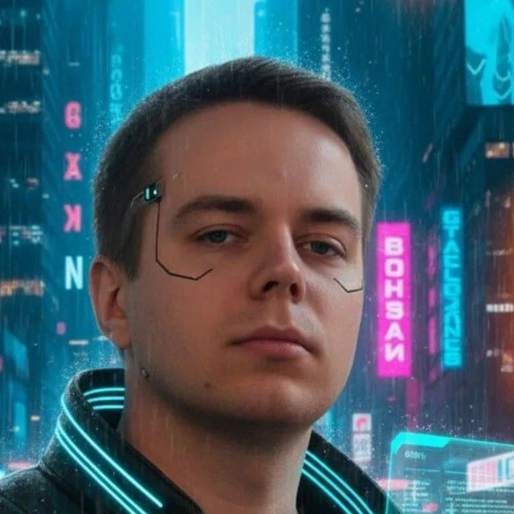
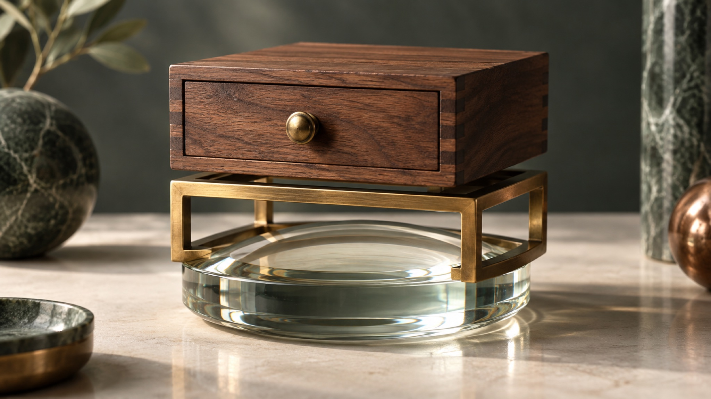

AI Цех · Поток 3 · Занятие 1 · 23 сентября 2026 · Уфа
Свой агент
на своём компьютере
Сегодня ставим и настраиваем Claude Code, переносим в него правила из Кодекса и учим его работать с вашими документами, почтой и голосом
Чем Цех отличается от Новой реальности
Там вы научились разговаривать
Промпты, ассистенты, поиск, визуал. Инструмент отвечает вам текстом в окне браузера.
Здесь вы собираете инструмент
Агент живёт на вашем компьютере, читает ваши файлы, пишет результат на диск и работает, пока вы заняты другим.
Выходите с работающей системой
Не с конспектом и не с курсом в закладках, а с настроенным агентом под ваши процессы.
Кто ведёт курс


Куда мы идём: восемь занятий
Кодер-агенты и харнесы
Что такое агент, чем харнесы отличаются, настройка Claude Code, связка с Кодексом
Инструменты агента
Навыки и плагины: ставим, настраиваем под себя, проверяем чужие на безопасность
Всё в одном окне
Подключения к почте, диску, Telegram, WhatsApp и Max: агент сам берёт нужное
База знаний агента
Ваши документы, правила и заметки собираются в одно место, агент опирается на них
Два агента на одной задаче
VS Code: Claude и Кодекс работают параллельно, каждый на своём куске
Свои модели
Открытый харнес: подключаете разные модели и выбираете под задачу и бюджет
Команда агентов
Несколько помощников работают одновременно, вы принимаете один готовый результат
Автономные агенты 24/7
Свой сервер, агент живёт без вас, цифровой офис под ваши процессы
Как устроено каждое занятие
Теория коротко
Объясняем смысл, не больше двенадцати минут подряд
Руками сразу
Повторяете на своём ноутбуке следом за ведущим
Разбор вслух
Что получилось, где застряли, что доделываем дома
Что унесёте с сегодняшнего занятия
Настроенный Claude Code
Открывается в вашей папке, видит ваши файлы, работает по вашим правилам
Правила и навыки из Кодекса
AGENTS.md, мастер-инструкция и навык «франкенштейн» переехали в новый инструмент
Разбор документов и почты
Claude читает папку на компьютере и письма в Gmail, собирает портрет по вашим файлам
Диктовку голосом
Говорите в любое поле ввода вместо того, чтобы печатать. Локально, бесплатно, по-русски
Часть 1
Чат остаётся в окне.
Агент выходит
на ваш компьютер
Разбираемся, чем кодер-агент отличается от привычного чата и из чего он собран
Чат и агент: в чём разница
Чат
Вы копируете файл в окно, получаете ответ текстом, вставляете результат обратно руками. Каждый шаг делаете вы.
Кодер-агент
Открывает папку сам, читает нужные файлы, запускает команды, сохраняет результат на диск и отчитывается, что сделал.
Из чего собран любой агент

Модель
Claude, GPT или другая. Думает над задачей и пишет ответ.
Харнес
Оболочка вокруг модели. Даёт ей руки: читать файл, запустить команду, поискать в интернете.
Папка-окружение
Ваши файлы, правила и навыки. Один и тот же агент в пустой папке и в вашей работает по-разному.
Четыре харнеса, которые мы пройдём на курсе
Кодекс
Прошли на Новой реальности. Остаётся для быстрых фоновых задач и всего, что уже настроено.
Claude Code
Сегодня. Основной инструмент курса: документы, почта, навыки, проекты.
OpenCode
Впереди. Бесплатные и китайские модели, когда лимит кончился, а работать надо.
Гермес
Впереди. Автономный агент, который живёт на сервере и работает круглосуточно.
Как они будут взаимодействовать
Одно окружение на всех
Папка проекта одна. Любой агент, которого вы запускаете, видит те же файлы и те же правила.
Подключения общие
Почта, диск, мессенджеры и базы подключаются к окружению, а не к одной программе. Сменили агента, подключения остались.
Модели меняются, работа нет
Под задачу берёте ту модель, которая её тянет: сильную для сложного, бесплатную для рутины. Проект от этого не переписывается.
Часть 2
Claude Code
против Кодекса
Честное сравнение: что у каждого сильнее, что слабее и почему мы не выбрасываем Кодекс
Claude Code и Кодекс: в чём разница на самом деле
| Claude Code | Кодекс | |
|---|---|---|
| Что это | Агент поверх моделей Anthropic | Агент поверх моделей OpenAI |
| Читает файлы на компьютере | Да, это умеет любой кодер-агент | Да, это умеет любой кодер-агент |
| Почта и календарь | Включаются кнопкой в чате, в Claude Code подхватываются сами | Ставятся отдельным сервером и авторизуются руками |
| Навыки (skills) | Есть, папка .claude/skills | Есть, папка .agents/skills |
| Стоимость входа | 20 $ в месяц, 17 $ при годовой оплате | Ниже, есть бесплатный вход |
| Знакомство группы | Новый, учим с нуля | Уже знаком с прошлого потока |
Что где оставляем
Остаётся в Кодексе
Быстрые фоновые задачи и всё, что уже настроено и работает. Менять инструмент ради самого перехода не нужно.
Берём в Claude
Длинные документы и тексты, работа с почтой и диском без настройки серверов, проекты и навыки в одном месте.
Правило выбора
Инструмент подбирается под задачу. Файлы на компьютере читают оба, разница в характере моделей и в том, что подключается одной кнопкой.
Про блокировки и VPN: три правила
Не прыгать между странами
Проверка по местоположению никуда не делась. Главное не страна, а постоянство: выбрали регион и сидите в нём.
Платёжный адрес как у карты
Адрес вводите тот, что выдал сервис карты. Выдумывать чужую страну не надо, адрес должен совпадать с картой.
Деньги возвращают
Если аккаунт всё же заблокируют, средства возвращаются. Практика показывает: при постоянном регионе проблем нет.
Сколько это стоит и какие лимиты
в месяц помесячно
в месяц при годовой оплате
окно сессии плюс отдельный недельный лимит
Часть 3
Настраиваем
под себя
Проходим экран настроек сверху вниз, каждую английскую кнопку разбираем по-русски
Настройка, часть первая
| По-английски | Что это | Зачем |
|---|---|---|
| Settings | Настройки аккаунта | Язык ответов, тема оформления, личные данные |
| Capabilities | Возможности | Включает поиск в интернете и выполнение кода |
| Permissions | Разрешения | Спрашивать перед действием или делать сразу |
| Instructions for Claude | Персональная инструкция | Правила, которые Claude помнит в каждом разговоре |
| Usage | Расход лимита | Сколько из пятичасового окна и недели уже потрачено |
Настройка, часть вторая: чего нет у Кодекса
Projects
Отдельное пространство разговоров со своими файлами и инструкцией. Рабочее не путается с личным.
Skills
Формат тот же SKILL.md, что вы знаете. Путь другой: .claude/skills/имя/SKILL.md вместо .agents/skills.
Connectors
Подключение почты, диска и календаря без единой строчки кода. Включается прямо в чате, плюсом у поля ввода.
Что переносим из Кодекса
AGENTS.md остаётся один на всех
Claude Code читает его сам с версии 2.1.277. Второй файл с правилами не заводим: один файл, все агенты.
Навык не копируем, а показываем
Папки навыков у агентов разные: .agents/skills у Кодекса, .claude/skills у Claude. Файл держим один и даём на него ссылку, чтобы правка в одном месте работала везде.
Проверяем, что подхватилось
Команда /memory показывает прочитанные файлы правил, /context показывает, что загружено в разговор.
Личные привычки в персональную инструкцию
Короткие команды и свои шаблоны идут в Instructions for Claude, это про приложение, а не про проект.
Мастер-инструкция и superpowers: включаем сегодня
Почему сегодня
Вы уже работали с мастер-инструкцией в Кодексе. Перенос текста не требует новых навыков, а две системы правил параллельно только мешают.
Что делаем руками
Вставляем текст мастер-инструкции в Instructions for Claude, кладём тот же текст в ~/.claude/CLAUDE.md, включаем superpowers тем же способом, что в Кодексе.
Что получаем
Агент держит ваши правила в каждом разговоре сам, без напоминаний в начале каждой задачи.
Часть 4
Claude читает
ваши документы
и вашу почту
Самое новое по сравнению с Кодексом: агент сам находит файлы, видит связи между ними и собирает портрет по вашим материалам
Цепочка из четырёх запросов
Разобрать документы
«Разбери все файлы в этой папке. Коротко: что это за бизнес, какие документы и что в каждом главное.»
Найти нестыковки
«Сравни цифры и факты между файлами: где числа расходятся, что объясняет провал или всплеск, какой вопрос остался открытым.»
Взять контекст из почты
«Найди письма за последний месяц: от кого чаще пишут, какие темы повторяются и что ждёт ответа. Ничего не отправляй.»
Собрать портрет
«Собери короткий портрет владельца бизнеса и сохрани в файл about-me.md в этой же папке.»
Что получается на выходе
Файл about-me.md
Короткий портрет: кто вы, чем занимаетесь, кто клиенты, что горит прямо сейчас. Лежит в вашей папке.
Дальше он работает на вас
Этот текст идёт в персональную инструкцию, и агент перестаёт каждый раз спрашивать, кто вы и чем занимаетесь.
Почта даёт контекст
Claude видит письма и черновики, видит что вложение есть, но содержимое вложения не читает. Перед отправкой всегда спрашивает.
Чего сегодня не делаем
Не платим на месте
Ничего не покупаем и не оформляем во время занятия.
Не подключаем рабочую почту с клиентскими данными
Только тестовый ящик или тот, что вы уже проверили.
Не показываем на экране пароли и чужие переписки
Если своей безопасной папки нет, берём учебную папку ведущего.
Кульминация: два агента на одной задаче
Раньше
Один инструмент на одну задачу. Закончился лимит или не хватило сильной стороны, работа встала.
Сегодня
Claude Code и Кодекс живут в одном окружении и делят одну задачу: один собирает и пишет, второй проверяет и доделывает.
Почему они не конфликтуют в одном окружении
Один файл правил
AGENTS.md читают оба агента. Claude Code поддерживает его с версии 2.1.277, поэтому второй файл не нужен.
Если файла два
Тогда по умолчанию читается только CLAUDE.md. Чтобы читались оба: /config, пункт Project instructions, значение claude-md-and-agents-md.
Навыки в одной папке
Пути у агентов разные, но файл навыка держим один и даём на него ссылку. Поправили в одном месте, работает у обоих.
Переезд из браузера в окружение
Где вы сейчас
Проекты собраны в браузере: чаты, файлы, инструкции лежат внутри Claude в вебе.
Куда переезжаем
В папку на компьютере: те же файлы и инструкции, но теперь их видит агент и может менять сам.
Как переносим
Файлы проекта выгружаем в папку, инструкцию проекта кладём текстом рядом, дальше работаем в папке, а браузер остаётся для разговоров.
Часть 5
Говорить быстрее,
чем печатать
Ставим диктовку, которой Альберт пользуется каждый день: нажал клавишу, сказал, текст сам появился в любом окне
Что мы сейчас поставим
Handy
Маленькая бесплатная программа с открытым кодом. Висит в строке меню и ждёт, когда вы нажмёте свою клавишу.
GigaAM v3
Русская модель распознавания от Сбера. Знает пунктуацию, цифры и латиницу, ошибается заметно реже обычных.
Полностью у вас
Речь не уходит в интернет: модель лежит на вашем диске и работает без сети. Ни подписки, ни оплаты.
Ставим за четыре шага
Скачать
handy.computer, кнопка download. Mac выбирает Apple Silicon или Intel, Windows берёт x64-setup.exe.
Установить
На Mac перетащить в Программы, на Windows запустить установщик и нажать далее.
Дать два разрешения
Только на Mac: микрофон и «Универсальный доступ». Без второго текст не вставляется в чужие окна.
Выбрать модель
При первом запуске список моделей. Находите GigaAM v3, нажимаете скачать, ждёте минуту.
То же самое руками агента
Поставь мне программу Handy для диктовки и русскую модель к ней. У меня [Mac или Windows]. Сделай по шагам: 1. Установи Handy: на Mac командой brew install --cask handy, на Windows через winget install cjpais.Handy. 2. Скажи, какие разрешения открыть в системе и где они лежат. 3. Объясни, где в приложении выбрать модель GigaAM v3, и проверь, что она скачалась. 4. Подскажи, как назначить клавишу fn вместо сочетания по умолчанию. Перед каждой командой объясняй по-русски, что она делает.
Настраиваем под себя
Клавиша fn
В настройках нажимаете на текущее сочетание и жмёте fn. Удобно тем, что она свободна и лежит под мизинцем.
Язык и удержание
Язык интерфейса русский, режим push-to-talk: держите клавишу, пока говорите, отпустили и текст вставился.
Свой словарь
Список слов, которые модель обязана писать правильно: Неовида, АйЦех, фамилии, названия ваших продуктов.
Чистка речи
Отдельный тумблер убирает «э-э», «ну» и повторы. Текст получается читаемый сразу, без правки.
Где это экономит время каждый день
Практика: ставим и пробуем
Поставьте Handy, скачайте модель GigaAM v3, назначьте клавишу и продиктуйте одно рабочее сообщение прямо в Telegram
Часть 6
Теперь
ваша задача
Берём не учебный пример, а ваше реальное дело и доводим до первого результата прямо здесь
Формула запроса
Вот моя задача: [одна строка, что нужно сделать]. Вот папка с нужными файлами: [путь]. Предложи первый шаг и сделай его.
Проверка: переезд состоялся, если
Claude Code открывается в вашей папке
и видит ваши файлы
Правила применяются сами
без напоминания в начале каждого разговора
Навык из Кодекса сработал
в новом инструменте, по той же команде
Диктовка работает
нажали клавишу, сказали, текст появился
Домашнее задание
Довести настройку
Claude Code открывается в вашей папке-окружении, правила и навык на месте.
Прогнать разбор
На безопасной копии своей папки или на учебной, без личных данных.
Прислать три строки
Что сделал, что получилось, что осталось непонятным. Плюс первые пять строк своего about-me.md.
К чему мы идём за восемь занятий
Подключения
Почта, диск, мессенджеры, таблицы и сайты приходят к агенту сами
Плагины и навыки
Агент учится вашим повторяющимся задачам и делает их по одной команде
Единая система
Всё, что у вас разбросано, собирается в одно место с базой знаний о вас и вашем деле
Занятие 1 из 8 · следующая встреча в понедельник
Инструмент собран.
Дальше собираем
работу под него
На следующем занятии: навыки и плагины, чтобы агент делал ваши повторяющиеся задачи по одной команде